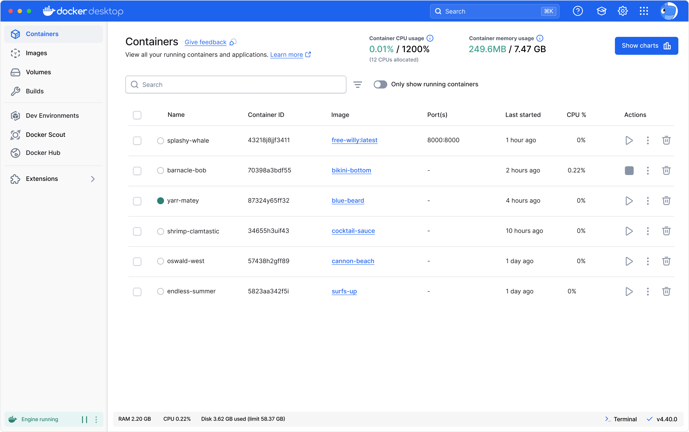
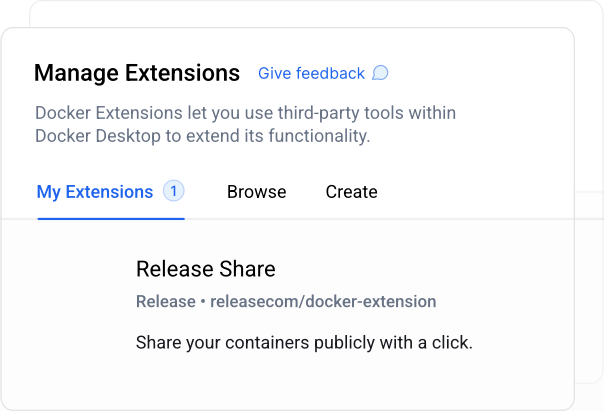

Программное обеспечение для контейнеризации №1 для разработчиков и команд
Оптимизируйте разработку с помощью мощных инструментов контейнеризации Docker Desktop.
Выбрать план
Загрузить Docker Desktop

Повышение производительности и эффективности для сокращения времени развертывания
Docker Desktop улучшает ваш опыт разработки, предлагая мощную, удобную платформу для управления контейнерами. Полностью интегрированный с вашими инструментами разработки, он упрощает развертывание контейнеров и ускоряет эффективность вашего рабочего процесса.
Движок Докера
Мощная среда выполнения контейнера
Docker Engine обеспечивает высокую производительность и надежность ваших контейнерных приложений. Он предоставляет базовую технологию для создания и запуска контейнеров, гарантируя эффективные и масштабируемые операции.
Интерфейс командной строки Docker
Гибкий интерфейс командной строки
Docker CLI предлагает надежный инструмент командной строки для точного управления вашими контейнерами. Выполняйте сложные команды, автоматизируйте задачи и легко интегрируйте Docker в ваши рабочие процессы.
Docker-композитор
Оптимизированное управление несколькими контейнерами
Docker Compose упрощает процесс управления многоконтейнерными приложениями. Определяйте и запускайте сложные настройки с помощью одного файла конфигурации, что упрощает развертывание и масштабирование ваших приложений.
Сборка Docker
Упрощенное строительство контейнеров
Docker Build — это мощный инструмент в Docker Desktop, который упрощает процесс создания образов контейнеров. Он позволяет вам упаковывать и собирать ваш код для отправки куда угодно, при этом легко интегрируя его в ваш конвейер разработки.
Docker-кубернетес
Встроенная оркестровка контейнеров
Docker Kubernetes обеспечивает встроенную поддержку Kubernetes в Docker Desktop, что позволяет вам эффективно оркестровать и управлять контейнерами. Поддерживая как многоузловые кластеры, так и версии, выбранные разработчиками, Docker Kubernetes упрощает локальное развертывание, масштабирование, тестирование и управление контейнерными приложениями без необходимости во внешнем кластере.
Управление громкостью
Эффективное управление данными
Docker Volumes предоставляет надежное решение для управления и совместного использования данных контейнеров. Эта функция позволяет вам легко и безопасно управлять томами для целей резервного копирования, совместного использования или миграции, улучшая управление данными и переносимость.
Синхронизированные общие файлы
Бесперебойная синхронизация данных
Синхронизированные общие файлы позволяют в режиме реального времени обмениваться файлами и синхронизировать их между вашим хостом и контейнерами. Эта функция гарантирует, что обновления файлов мгновенно отражаются на хосте и контейнере, улучшая совместную работу и согласованность.
Отладка Docker
Расширенные инструменты устранения неполадок
Docker Debug предоставляет комплексные инструменты для диагностики и решения проблем в ваших контейнерах и образах. Эта команда CLI позволяет вам создавать и работать с тонкими контейнерами, которые в противном случае было бы трудно отлаживать.
Защищенный рабочий стол Docker
Улучшенная изоляция контейнера
Hardened Docker Desktop включает расширенные функции безопасности для защиты вашей среды разработки. Благодаря улучшенной изоляции контейнеров, управлению доступом к реестру и образам, а также соответствию отраслевому стандарту вы можете уверенно создавать и развертывать безопасные приложения.
Поддержка VDI
Интеграция виртуального рабочего стола
Поддержка VDI позволяет Docker легко интегрироваться со средами инфраструктуры виртуальных рабочих столов (VDI). Эта функция гарантирует бесперебойную работу Docker на виртуализированных рабочих столах, обеспечивая единообразный опыт независимо от того, где вы получаете доступ к своим контейнерам.
Docker Private Extensions Marketplace
Индивидуальные расширения для ваших нужд
Docker Private Extensions Marketplace предлагает тщательно подобранный выбор расширений, соответствующих вашим конкретным требованиям. Настройте и улучшите свою среду Docker с помощью специализированных инструментов и интеграций, доступных исключительно через Marketplace.
Расширьте возможности Docker Desktop
Docker Desktop расширяет свои возможности с помощью Docker Extensions, позволяя разработчикам легко интегрироваться с их любимыми инструментами и сервисами. Эти расширения расширяют функциональность Docker Desktop, предоставляя индивидуальный опыт, отвечающий конкретным потребностям разработки.
Узнайте больше о расширениях
Расширенная интеграция
Подключайтесь к широкому спектру популярных инструментов и сервисов, оптимизируя процесс разработки.
Настраиваемый опыт
Персонализируйте Docker Desktop с помощью расширений, которые соответствуют вашим индивидуальным или групповым потребностям, повышая производительность и эффективность.
Поддержка популярных инструментов
Используйте расширения от ведущих издателей изображений и поставщиков инструментов, гарантируя совместимость с инструментами, которыми вы пользуетесь.
Узнайте больше о расширениях

«Изначально наше использование Docker было ограничено виртуальными средами из-за ограничений политики на наших рабочих станциях. Внедрение Docker Desktop и WSL2 позволило получить доступ к контейнерным технологиям на наших физических рабочих станциях в масштабе».
Юлий Правчев
Старший DevOps, CARIAD